Salutare tuturor! Toată lumea a observat că am slăbit foarte mult și a început să mă bombardeze cu întrebări . Am încercat să răspund tuturor și să vă susțin pe fiecare dintre voi, dar am eșuat - cu atâtea mesaje la care să răspund, ar fi trebuit să trăiesc online. De aceea am decis să scriu acest articol, pentru a răspunde la întrebarea: „Cum am reușit să slăbesc 31 kg?” (Asta nu înseamnă că nu puteți să-mi scrieți sau să mă întrebați ceva, dar îmi simplifică viața).
Transformarea mea s-a întâmplat în doar DOUĂ LUNI! UN REZULTAT UIMITOR, NU-I AȘA?
Nu am fost niciodată slabă, însă am observat că luam tot mai mult în greutate. Au apărut cute oribile pe burtă, arătam ca un bulldog în bikini, iar șoldurile, picioarele și fundul deveneau tot mai mari! Am hotărât să am cu orice preț un corp zvelt și sănătos , deci, am încetat să mai consum mâncăruri prăjite și am renunțat la mesele târzii. Mergeam dimineața la alergat și seara la sală, dar în loc să slăbesc, continuam să mă îngraș tot mai mult! După o lună, greutatea mea a ajuns la cifra îngrozitoare - APROAPE 100 KG! Am continuat să urmez o dietă tot mai strictă, am exclus carnea, pâinea, cartofii prăjiți și dulciurile. Am ajuns să mănânc doar fructe și legume și să beau doar apă. Am încercat ceaiuri și pilule incredibil de scumpe, nimic nu părea să funcționeze . După o vreme, greutatea pierdută revenea pe corpul meu extenuat.
Dietele și pilulele nu m-au ajutat, doar m-au stors de bani!
Exercițiile fizice sunt prea dificile și durează prea mult până să observi un progres. Deci, ce ar trebui să fac?
După nenumărate diete, pilule și ore petrecute la sală și mii de lei plătiți unui antrenor personal, am renunțat complet. Într-o zi, am dat peste un articol despre Matcha Slim și am decis să încerc și eu. Deși am auzit că Demi Moore, Katy Perry, J-Lo și multe alte vedete au slăbit cu această pudră, eram sceptică. Dar încercasem deja totul și eram disperată. Nu aveam de ales! Am citit recenziile și erau cu adevărat impresionante!
Milioane de femei din Europa și SUA au scăpat de kilogramele în plus cu ajutorul suplimentului Matcha Slim. Potrivit cercetărilor, 96,7% au pierdut 12-17 kg în trei săptămâni!
Deci, am decis! Am accesat website-ul lor , am verificat totul a doua oară și am comandat pudra. A sosit în două săptămâni. Am citit informațiile de pe ambalaj și am început să iau o porție pe zi, conform instrucțiunilor. Am adăugat o linguriță de pudră într-un pahar (150 ml) de apă fierbinte și am așteptat până când pudra s-a dizolvat complet, apoi am băut-o.
Rezultate
După doar două săptămâni, rezultatele mele au fost uimitoare - am slăbit 6 kg! Umflăturile au dispărut și am început să arăt mult mai bine! Șoldurile și burta au scăzut considerabil - și eram mult mai bine dispusă! Am început să cred că aș putea fi din nou frumoasă, fără diete sau exerciții! Deci, am continuat să mănânc orice doream ! Eram sătulă de înfometare și exerciții...
La finalul celei de-a treia săptămâni, am slăbit încă 12 kg! Corpul meu era tonifiat și asta m-a motivat să urc pe scări în loc să iau liftul de fiecare dată. Ceea ce părea înainte un chin a devenit o plăcere! Nu îmi venea să cred că toate acestea se întâmplau doar pentru că urmam instrucțiunile simple de pe ambalaj! Dacă eu am reușit, oricine poate! Au trecut doar două luni și cele 31 kg pe care le aveam în plus au dispărut!
Mi-am atins greutatea dorită în 60 de zile. Burta a dispărut, am pierdut 31 kg și am obținut corpul la care nu am îndrăznit să visez !
Apropo, Matcha Slim a fost testată de Academia Națională de Științe în 2014. Rezultatele ar fi produs un șoc major, dar nu au fost făcute publice niciodată. Asta pentru că ar fi falimentat companiile farmaceutice, cluburile de fitness, nutriționiștii și clinicile care practică prețuri exorbitante! Nu este de mirare: Matcha Slim este incredibil de ieftină!
Acum, le recomand tuturor prietenilor și colegilor mei Matcha Slim . Important: comandă de pe website-ul oficial , altfel, te-ai putea trezi cu un produs contrafăcut. Sunt foarte fericită că am obținut aceste rezultate și cred că și voi veți fi fericite! Uitați de stereotipuri: nu aveți nevoie de nicio dietă sau antrenamente pentru a avea un corp frumos!
P.S. Toate cele care ați slăbit cu ajutorul pudrei Matcha Slim, vă rog să scrieți rezultatele voastre aici! Veți convinge și alte persoane că funcționează! Sănătate!
Salutare! Am vești foarte bune! Reprezentanții companiei Matcha Slim m-au contactat pentru a oferi 50% reducere primilor vizitatori ai blogului meu care comandă de aici!
comentarii
Dragă Ionela, mulțumesc că m-ai inspirat să scap în sfârșit de kilogramele oribile! Au trecut trei săptămâni și am pierdut deja 28 kg. Greutatea mea e de 57 kg acum și, așa cum ai promis, nu mai fluctuează. Cu drag, Cristina.
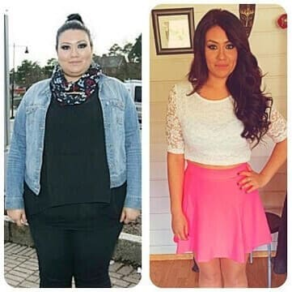Am visat mult timp la un corp zvelt și am citit despre Matcha Slim pe această pagină acum trei luni. Am ezitat să comand, dar m-a convins mama. Nu e un preț atât de mare pentru a-ți realiza un vis! Acum slăbim împreună. Ea are mai mult succes decât mine :(
Sunt fericită că am descoperit acest blog. Cu siguranță voi încerca această pudră ! Mulțumesc!
Salutare! Ți-am urmat sfatul și am încercat Matcha Slim și... ei bine... practic, mi-ai salvat familia și căsnicia =) Ionela, ești o fată minunată! Soțul meu s-a schimbat foarte mult în ultima vreme, mi-am redobândit încrederea în mine... Acum mă simt GROZAV! =)
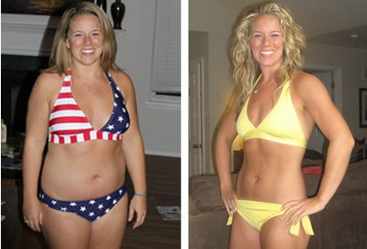Bună, fetelor! Mă voi alătura în curând echipei de fete slabe! Tocmai am primit Matcha Slim ! Vă mulțumesc că v-ați împărtășit rezultatele, m-au motivat să încep cura. Sper că în sfârșit voi scăpa de toată grăsimea. Voi scrie și eu aici despre progresul meu xoxo
Bună, Nicoleta! Mă bucur foarte mult pentru tine! Cel mai important lucru este armonia interioară, însă aceasta este imposibilă fără armonie cu propriul corp. Abia aștept să văd primele tale rezultate. Și, reține: mai bine un progres mic decât deloc! Baftă!
Dragă Ionela! Mă bucur că am descoperit site-ul tău, caut sprijin. Am încercat multe metode de a slăbi, dar, din păcate, rezultatele mele sunt departe de așteptări. Înălțimea mea este de 1,70, iar greutatea de 105 kg, ceea ce este dizgrațios!!! Trebuie să scap de cel puțin de 36 kg și Matcha Slim pare ultima mea speranță...
Bună, Carmen! Nu sunt singura care a slăbit cu ajutorul acestei pudre ! Și prietenele mele au încercat-o și FUNCȚIONEAZĂ, așa că îți ofer o garanție 100% că nu vei fi dezamăgită din nou. Toate suntem mulțumite de rezultatele noastre și îți dorim și ție același lucru!
Fetelor, vreau să vă rog încă o dată să vă faceți câteva minute să împărtășiți rezultatele voastre, pentru că a împărtăși înseamnă să-ți pese! Mesajul vostru ar putea convinge pe cineva să devină în sfârșit suplă, frumoasă și fericită!
L-am primit ieri și de azi încep o viață nouă! Abia aștept să văd primele rezultate :)
Dragă Ionela! Mulțumesc din suflet! Am slăbit foarte rapid, dar, cel mai important, greutatea nu a revenit, ca mai demult! Este un miracol! Am recomandat pudra prietenelor mele, deoarece m-am săturat să le văd înfometându-se până își dau duhul.
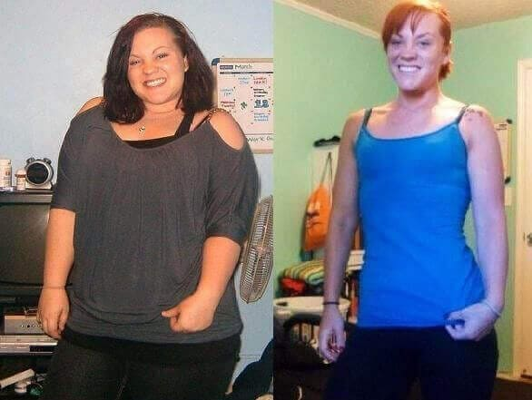Am o întâlnire mâine și vom merge să mâncăm la un restaurant elegant. Acum câteva săptămâni, orice gând de a mânca în oraș și de a consuma ceva fără să știu câte calorii conține ar fi fost un coșmar. Dar acum nu-mi mai pasă! Știu că pot mânca orice vreau și că nu mă voi mai îngrășa. Am slăbit 27,5 kg cu ajutorul lui Matcha Slim în doar o lună! Mulțumesc, Ionela Popa!
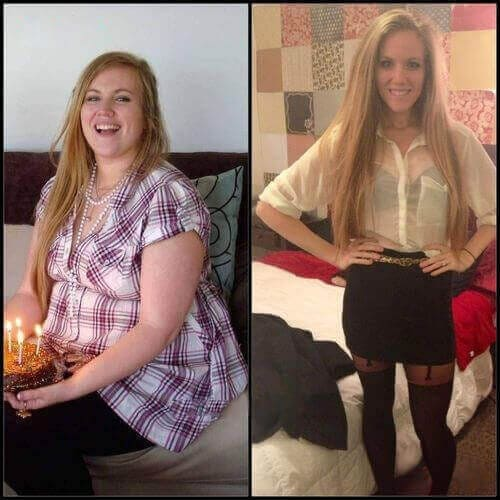Wow, Andrada, chiar ai slăbit atât de mult într-o lună? Poate ar trebui să comand Matcha Slim și eu... M-am îngrășat încă 3 kg, e oribil...
Am slăbit 18 kg în 6 săptămâni!!! Incredibil! Mulțumesc, Ionela Popa!!!!!
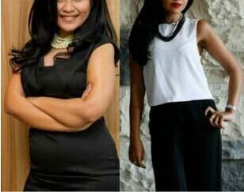Felicitări! Rezultatul tău este extraordinar! Acum nu mai am îndoieli cu privire la Matcha Slim !!!
Îmi împărtășesc aici rezultatele, după cum am promis. Acest sistem este excelent. Am reușit să slăbesc aproape 15 kg în șase săptămâni. WOW!
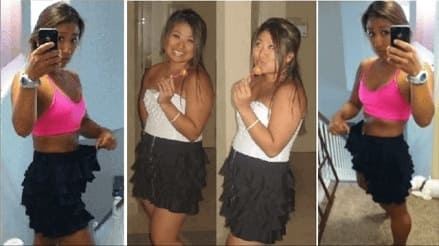Uitați de îndoieli, suplimentul chiar funcționează! Și prietena mea a slăbit cu Matcha Slim - aproximativ 18 kg în două luni, dacă nu greșesc. Impresionant, nu-i așa?
Mulțumesc pentru recenziile voastre, doamnelor! M-ați motivat să comand Matcha Slim și să încerc să devin mai frumoasă! Am slăbit deja 5 kg, au mai rămas 6 până la greutatea visată!
Cele trei verișoare ale mele s-au schimbat complet după ce au luat această pudră timp de două luni. S-au transformat din fete care purtau xxl în frumuseți!
Iată rezultatele mele: Am slăbit 12,5 kg fără o singură sesiune la sală! Toată lumea este șocată =))
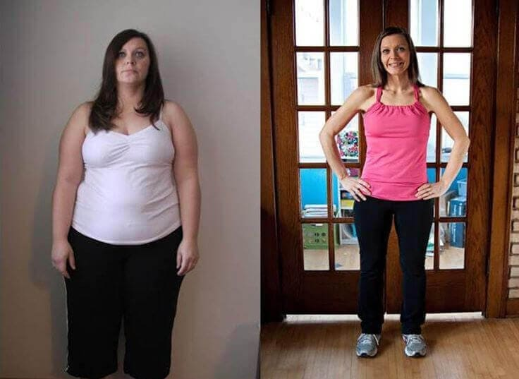Bună, Gina! Mă bucur foarte mult pentru tine! Dar, din câte îmi amintesc, doreai să slăbești puțin mai mult. Este un început foarte bun! Ține-o tot așa! Baftă!
Bună, Ionela! Am citit postarea ta și am decis să comand Matcha Slim . Mă voi întâlni în curând cu foștii colegi de liceu, nu ne-am văzut de mult și ar fi fost păcat să apar cu 115 kg (!!!!) și haine XXL!!! Eram foarte slabă la 17 ani... Acum cântăresc 68 kg și mi-am cumpărat o rochie de mărimea M pentru ocazie. Încă mai am mult de lucru, dar îți sunt recunoscătoare că m-ai motivat să încep! Sănătate!
Rezultatele voastre sunt pur și simplu uimitoare... Dar am înțeles bine, nu trebuie să urmezi o dietă? Sunt dezgustată de ideea că trebuie să urmez iar o dietă fără carbohidrați sau ceva similar... Nu mai vreau să aud de foame, vă implor!
Amalia, ai înțeles corect. Matcha Slim nu necesită nicio dietă. Toate știm că, imediat ce închei o dietă, greutatea revine - ceea ce nu se întâmplă dacă iei Matcha Slim . Deci, nu-ți face griji, încearcă și vei vedea!
Trebuie să împărtășesc asta!!! Am pierdut 20 kg în două luni!!!!! Pudra este o adevărată comoară ! Eu și soțul avem a doua lună de miere :)))
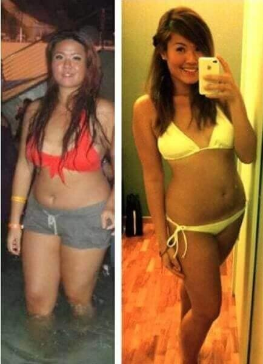Am început să iau această pudră acum două luni și am slăbit deja 23 kg! Trebuie să menționez că aveam 90 kg și îmi era rușine să merg la plajă în vacanță.
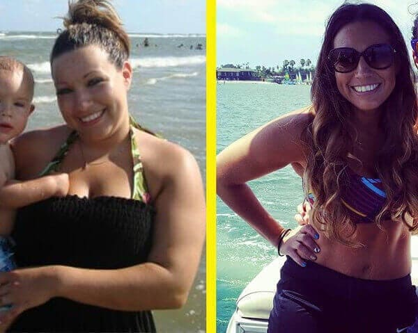Trebuie să slăbesc 14 cât mai repede, am dat peste acest website și am fost fascinată de toate comentariile și rezultatele fetelor... cu siguranță voi încerca această pudră să văd ce se întâmplă :) Țineți-mi pumnii!
Sora mea a cumpărat două pachete de Matcha Slim din străinătate anul trecut. La început, am crezut că e ridicol - cum poți să slăbești fără diete și fără antrenamente - dar m-a convins să încerc... Nu aș fi crezut că este posibil... Am început să iau pudra în februarie, iar în mai A TREBUIT SĂ-MI SCHIMB COMPELT GARDEROBA! Totul era prea mare pentru mine!!!! Am ajuns de la 92 kg la 58 kg în mai puțin de două luni!!!! Au trecut doi ani de atunci și greutatea mea nu s-a schimbat! Sunt o femeie fericită acum. În concluzie, încercați această pudră câteva săptămâni și veți vedea...
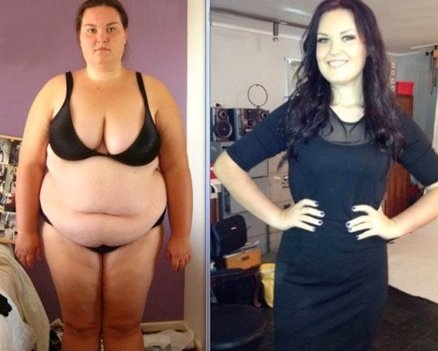Wow, Daria, rezultatul tău este impresionant! Dragile mele, vreau să îmi cer scuze că nu vă pot răspunde fiecăreia, însă citesc totul și vreau să spun că mă bucur foarte mult pentru voi și sunt mândră de voi și de ceea ce ați realizat!
A trecut atât de mult timp, încât mi se pare ireal... Aveam 79 kg... Acum, greutatea mea este de 54 kg și orice fac sau mănânc, nu se schimbă! Sunt mândră să vă arăt pozele mele:
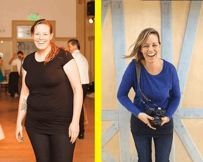Dragă Ionela și dragi fete care ați postat aici comentariile voastre, Nu am cuvinte să îmi exprim recunoștința și fericirea... Am 33 de ani și în ultimii ani am trecut prin iad din cauza greutății mele. Chiar și cele mai simple antrenamente erau un chin, aveam dureri de spate oribile, rămâneam fără energie în scurt timp... Am citit postările voastre și am decis să încerc Matcha Slim - iar rezultatele mi-au depășit toate așteptările! Acum greutatea mea este de 63 kilograme și aveam 91 înainte! Am pierdut 28 kg în trei luni! Mă simt minunat, ca și cum aș fi cu 10 ani mai tânără! Nu mai am dispnee și spatele nu mă mai doare!
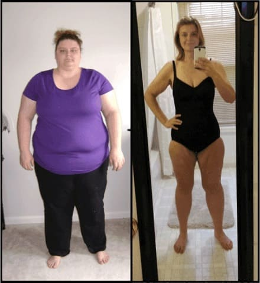Am băut un ceai japonez pentru slăbit și m-a ajutat să slăbesc 2 kg, dar le-am pus înapoi după două săptămâni :(( Spuneți-mi că nu voi păți la fel cu Matcha Slim .
Bună, Ana. Nu-ți face griji, nu se va întâmpla. Uită-te la pozele acestor femei frumoase - toate au slăbit rapid și nu s-au mai îngrășat nici măcar un kilogram de atunci! Suplimentul funcționează foarte bine și îți ajută corpul să preia controlul asupra grăsimii. Ar trebui să încerci Matcha Slim măcar o săptămână și vei vedea imediat rezultatul!